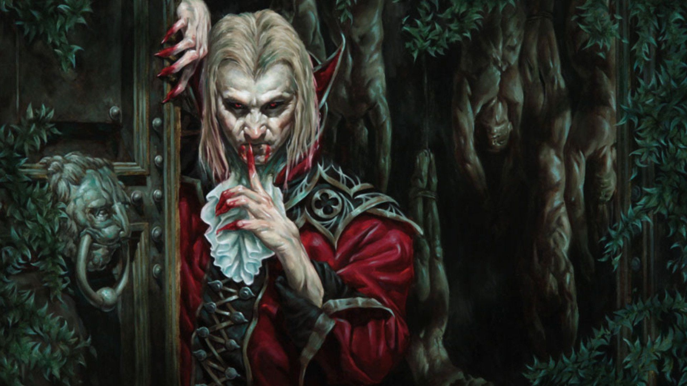

Vampiro: A máscara
Não é sobre cavernas e dragões, ou sobre salvar uma vila e tornar-se um herói. RPG também é horror, drama pessoal, tradições e sangue.
Vampiro: a Máscara é um RPG de horror pessoal baseado em política, manipulações e interpretação, muito mais do que em combates. Em Vampiro: a Máscara, o personagem acabou de se tonar um vampiro. Ele não é mais um mortal. Agora, e para toda a eternidade, ele é membro de uma sociedade elaborada, com códigos complicados de comportamento, costumes e regras aparentemente intermináveis e protocolos hierárquicos muito rígidos.
Jogar